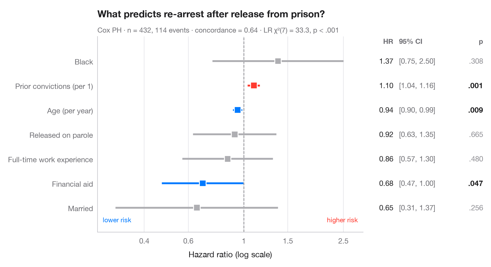

Cox 风险比
Cox 比例风险模型的森林图，附 HR、95% 置信区间和 p 值。

Cox 比例风险模型估计每个协变量使事件的瞬时风险变为原来的多少倍。每一行展示一个风险比（HR）及其 95% 置信区间，采用对数刻度，使风险减半与加倍到 HR = 1 参考线的距离相等。右侧表格重复列出这些数字，与正式发表的森林图一致。
数据为 Rossi 再犯研究（lifelines.datasets.load_rossi）：432 名获释囚犯被随访一年，事件为再次被捕。模型用 lifelines.CoxPHFitter 拟合；副标题报告一致性指数（C 指数）以及整个模型的似然比检验。
代码及图中文字均为英文。
import matplotlib.pyplot as plt
import numpy as np
from lifelines import CoxPHFitter
from lifelines.datasets import load_rossi
# Data: weeks to re-arrest after release from prison
df = load_rossi()
cph = CoxPHFitter().fit(df, duration_col="week", event_col="arrest")
lr = cph.log_likelihood_ratio_test()
# Tidy the summary: HR, 95% CI, p-value
labels = {"fin": "Financial aid", "age": "Age (per year)", "race": "Black",
"wexp": "Full-time work experience", "mar": "Married",
"paro": "Released on parole", "prio": "Prior convictions (per 1)"}
res = cph.summary.rename(columns={"exp(coef)": "hr", "exp(coef) lower 95%": "low",
"exp(coef) upper 95%": "high"})
res = res.sort_values("hr")
y = np.arange(len(res))
colors = np.where(res.p < 0.05, np.where(res.hr > 1, "#FF3B30", "#007AFF"), "#AEAEB2")
fig, (ax, tab) = plt.subplots(1, 2, figsize=(9, 4.8), sharey=True,
gridspec_kw=dict(width_ratios=[3, 1.3]))
# Forest: CI whiskers and point estimates on a log axis
ax.axvline(1, color="#8E8E93", lw=1, ls="--", zorder=1)
ax.hlines(y, res.low, res.high, color=colors, lw=2.5, zorder=2)
ax.scatter(res.hr, y, s=80, marker="s", color=colors, edgecolor="white", lw=1.2, zorder=3)
ax.set_xscale("log")
ax.set_xticks([0.4, 0.6, 1, 1.5, 2.5], ["0.4", "0.6", "1", "1.5", "2.5"])
ax.minorticks_off()
ax.set_xlim(0.26, 3)
ax.set_yticks(y, [labels[t] for t in res.index])
ax.grid(axis="x"); ax.grid(axis="y", visible=False)
ax.set_xlabel("Hazard ratio (log scale)")
ax.text(0.98, -0.6, "higher risk", ha="right", color="#FF3B30", fontsize=9,
transform=ax.get_yaxis_transform())
ax.text(0.02, -0.6, "lower risk", ha="left", color="#007AFF", fontsize=9,
transform=ax.get_yaxis_transform())
# Table: HR [95% CI] and p-value
for yi, (_, r) in zip(y, res.iterrows()):
p = "< .001" if r.p < 0.001 else f"{r.p:.3f}".lstrip("0")
tab.text(0.22, yi, f"{r.hr:.2f}", va="center", ha="right", fontsize=10, color="#1D1D1F")
tab.text(0.27, yi, f"[{r.low:.2f}, {r.high:.2f}]", va="center", fontsize=10, color="#6E6E73")
tab.text(1, yi, p, va="center", ha="right", fontsize=10,
color="#1D1D1F" if r.p < 0.05 else "#8E8E93",
fontweight="semibold" if r.p < 0.05 else "normal")
tab.text(0.22, len(res) - 0.3, "HR", ha="right", fontsize=9.5, color="#6E6E73", fontweight="semibold")
tab.text(0.27, len(res) - 0.3, "95% CI", fontsize=9.5, color="#6E6E73", fontweight="semibold")
tab.text(1, len(res) - 0.3, "p", ha="right", fontsize=9.5, color="#6E6E73", fontweight="semibold")
tab.set(xlim=(0, 1), ylim=(-1, len(res)))
tab.axis("off")
ax.set_title("What predicts re-arrest after release from prison?", pad=26)
ax.text(0, 1.02, f"Cox PH · n = {len(df)}, {df.arrest.sum()} events · concordance = "
f"{cph.concordance_index_:.2f} · LR χ²({lr.degrees_freedom:.0f}) = {lr.test_statistic:.1f}, "
f"p < .001", transform=ax.transAxes, fontsize=9.5, color="#6E6E73")
plt.show()
图表使用了可选的 PyStatlas 样式：添加 plt.style.use("pystatlas.mplstyle") 即可完全还原其外观。
如何引用
PyStatlas 由 Thierry Warin 创建并维护。如果它对你的工作有所帮助，敬请引用。
Warin, T. (2026). Cox hazard ratios. In PyStatlas: The Python Gallery of Statistical Graphics. https://warint.github.io/pystatlas/survival/cox-hazard-ratios/
@misc{warin2026statlas,
author = {Warin, Thierry},
title = {PyStatlas: The Python Gallery of Statistical Graphics},
year = {2026},
howpublished = {\url{https://warint.github.io/pystatlas/}},
note = {Source code: https://github.com/warint/pystatlas}
}